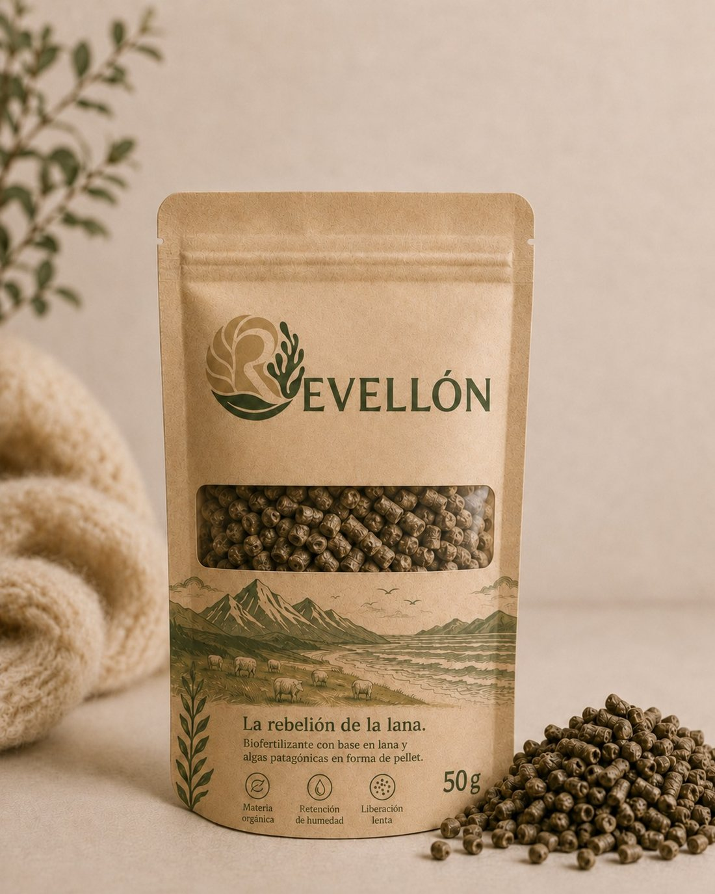

Fertilización prolongada
La queratina de la lana concentra nitrógeno orgánico y lo libera de forma progresiva, al ritmo en que el suelo la degrada.
Además de nitrógeno, Revellon aporta fósforo y potasio.
Desarrollamos biotecnología para convertir descartes en insumos de alto valor para una agricultura más sustentable y circular.
El mundo que queremos
Queremos un mundo donde podamos producir sin agotar los suelos ni desperdiciar recursos que todavía tienen valor.
Un mundo donde los nutrientes y materiales que hoy terminan fuera del sistema puedan volver a formar parte de él, transformándose en nuevas herramientas para producir.
Donde cada cosecha no sea solamente extracción, sino parte de un ciclo capaz de devolver nutrientes, materia orgánica y vida al suelo.
Creemos que ciencia y tecnología pueden ayudarnos a cerrar esos ciclos y construir una agricultura más productiva, resiliente y regenerativa.
La sustentabilidad no debería significar producir menos.
Debería significar producir mejor.
El problema
Producir de manera orgánica implica sostener la productividad del suelo con un conjunto más limitado de insumos y herramientas.
Y la fertilidad no depende solamente de aportar nutrientes. También requiere materia orgánica, disponibilidad de agua, actividad biológica y una liberación de nutrientes que acompañe las necesidades del cultivo a lo largo del tiempo.
Hoy existen alternativas para trabajar sobre estas dimensiones, pero muchas lo hacen de manera aislada. El desafío es desarrollar insumos capaces de integrarlas en soluciones más simples y completas para el productor.
Porque cada cosecha extrae recursos del suelo. Sostener la productividad en el tiempo requiere devolverlos y, al mismo tiempo, conservar las condiciones que hacen que ese suelo siga siendo fértil.
El producto
Revellon Pellet
Revellon Pellet es un fertilizante orgánico pelletizado cuya matriz principal es lana de oveja de descarte, complementada con Macrocystis y harina de hueso.
Combina en un único insumo las propiedades que hasta ahora obligaban a usar varios.

Una aplicación, múltiples funciones
La queratina de la lana concentra nitrógeno orgánico y lo libera de forma progresiva, al ritmo en que el suelo la degrada.
Además de nitrógeno, Revellon aporta fósforo y potasio.
La fibra de lana absorbe agua y la devuelve de a poco.
El suelo aprovecha mejor cada lluvia y cada riego, y aguanta más entre una y otra.
Revellon no aporta solo nutrientes: incorpora biomasa.
Esa materia orgánica es la que da estructura al suelo y sostiene el agua, la raíz y la vida microbiana.
Incorporamos Macrocystis, una macroalga usada en agricultura por sus minerales y compuestos bioactivos.
Acompaña el desarrollo del cultivo desde el arranque.
Fertilización + agua + suelo + bioestimulación. En una sola aplicación.
Investigación y desarrollo
Revellon no parte de cero. El uso de lana de descarte como insumo agrícola viene siendo estudiado por grupos de investigación de distintos países, y esa literatura es el punto de partida de nuestro trabajo.
Los estudios que siguen no son resultados de Revellon. Son el estado del arte internacional sobre el que estamos construyendo nuestra propia validación experimental.
Compararon pellets de lana contra un fertilizante comercial en espinaca y tomate. A igual aporte de nitrógeno, no encontraron diferencias de rendimiento entre ambos.
Bradshaw & Hagen · Agronomy 12(5), 1210Una revisión de aplicaciones de lana residual en agroecosistemas. Señala su contenido de nitrógeno, carbono y azufre, y su capacidad de absorber agua durante lluvias intensas y liberarla gradualmente en períodos de déficit hídrico.
Camilli et al. · Agronomy 15(2), 446Los pellets de lana aumentaron la actividad biológica del suelo y mejoraron la eficiencia en el uso del nitrógeno respecto del control.
Biologia Futura · SpringerEvaluaron dos residuos de lana provenientes de la industria textil como fertilizante orgánico en cultivos de girasol y maíz.
J. Soil Sci. Plant Nutr. · SpringerNuestro trabajo es llevar esa evidencia a una formulación concreta y validarla en condiciones productivas argentinas.
Impacto
Debido al cambio climático se aproximan campañas más secas y lluvias más concentradas. En ese escenario, un suelo que retiene agua es una necesidad: es la diferencia entre una campaña que rinde y una que se pierde.
Cada aplicación de Revellon suma materia orgánica y ayuda a construir un suelo con resiliencia hídrica para lo que se viene.
Si sos productor, vivero, investigador, empresa agropecuaria, generador de descartes o simplemente creés que podemos hacer un uso más inteligente de nuestros recursos, queremos conocerte.
Contacto
Contanos quién sos y en qué te gustaría trabajar con nosotros. Respondemos todos los mensajes.